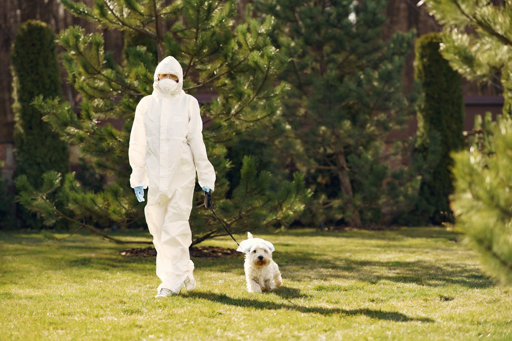

There is someting strange going on.
Hi, my name is Scruffles...
I've never been a huge fan of social media, but I created this account to stay close with my wife, Puff. It seems that my hoomans have gone insane! I’ve noticed strange behavior in other hoomans on walks too
My hoomans have been home ALL THE TIME (including the small hooman) and when we go on walks they wear masks and gloves. There are toilet-paper-roll piles all over the house, and they get really upset with me if I try to play with their precious TP.
I'm currently missing my wife a lot and would really like to see her. My hooman hasn’t wanted to see any other hoomans for about a month now, so I’m not able to meet up with my Puff. I miss you pretty lady!
Having my hoomans home all the time is nice, but the small hooman won't leave me alone! He keeps picking me up and making me beds in his laundry basket. He grabs me every time he sees me and won't give me any space or privacy. I've been spending a lot of time hiding under my hoomans desk to get away from the little hooman. If my Puff was here I know she would growl and bark at him for me.
The highlight of my day has been gardening with my lady hooman. She has been planting and digging in the back yard lately. I really like digging and occasionally she throws sticks for me to move them out of her garden. It's nice to get to spend time with her now that she's home more often. I'm doing my best to have a good time and I’m sure other dogs have been facing challenges as well. I'm wishing the best for all you floofs out there who are having a rough time! I hope our hoomans start acting normal again soon.